Heterogeneous Demand Modeling
UCSD MGT 100 Week 5
Segmentation case study: Quidel
- Leading B2B manufacturer of home pregnancy tests
- Tests were quick and reliable
- Wanted to enter the B2C HPT market
- Market research found 2 segments of equal size;
what were they?
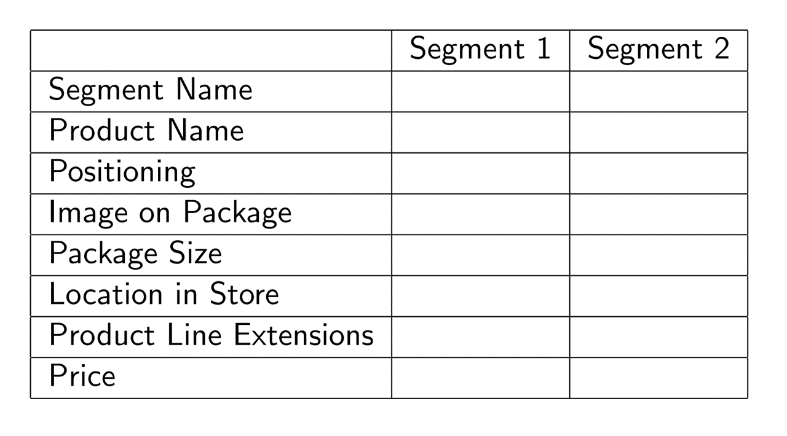
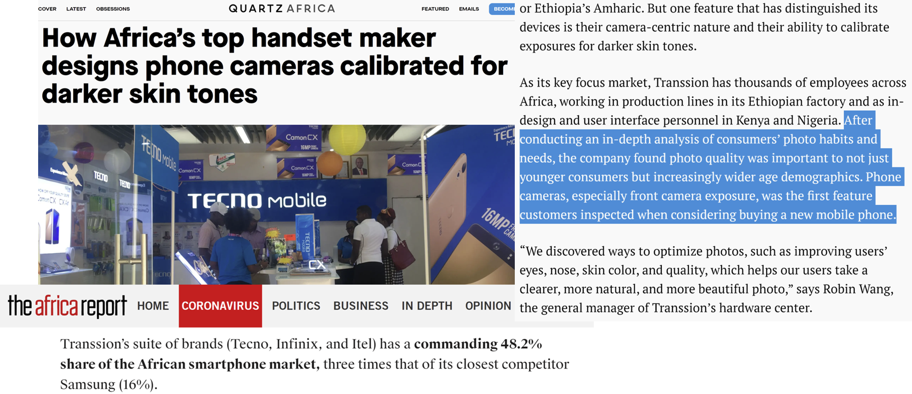
Digital Default Frequencies
Classic study: 95% of MS Word users maintained original default options
Classic study: 81-90% of users don’t use Ctrl+F
Classic study: Randomizing top 2 search results only changed click rates from 42%/8% to 34%/12%
2021 data: Safari has 90% share on iPhone, Chrome (74%) and Samsung Internet (15%) have 89% share on Android
- Chrome always preinstalled on Android, Samsung Internet preinstalled on 58% of Android devicesWhy? Behavioral research:
- Defaults are good enough - Changing defaults is hard - Changing defaults is uncertain/ambiguous - User assumes product designer knows best--sometimes correctly - Popularity implies utility - Possible fear of exclusion or norm deviationImplies importance of understanding customer needs (aka market research) prior to initial product offerings
Het. Demand Models
Discrete heterogeneity by segment
Continuous heterogeneity by customer attributes
Individual-level demand parameters
- We'll code 1 & 2 - 3 is often best but needs advanced techniques --> graduate study
MNL Demand
Recall our MNL market share function \(s_{jt}=\frac{e^{x_{jt}\beta-\alpha p_{jt}}}{\sum_{k=1}^{J}{e^{x_{kt}\beta-\alpha p_{kt}}}}\)
- Recall that the model can predict how *any* change in x_{jt} or p_{jt} would affect *all* phones' market shares - What is \alpha? What is \beta?What are the model’s main limitations?
1. Assumes all customers have the same preferences 2. Assumes all customers have same price sensitivity 3. IIA: Predictions become unreliable when choice sets change 4. Requires exogenous price variation to estimate \alpha (all demand models) 5. Assumes iid \epsilon distribution: Convenient but unrealistic Modeling heterogeneity can alleviate 1-3 and enable better predictions
Het. Demand Models : Intuition
MNL estimates quality; Het MNL estimates quality & fit
Recall vertical vs. horizontal product differentiationBetter “counterfactual predictions” for strategic variables that enter the model and predict sales
- Pricing: price discrimination, two-part tariffs, fees, targeted coupons - Advertising: Ad targeting, frequency, media, channels - Product: Targeted attributes, line extensions, brand extensions - Distribution: Partner selection, intensity/shelfspace, in-store environment - M&A: Oft used in antitrust merger reviews
Biggest risks? Overfitting ; Misuse
- Who has heard of cross-validation?1. Discrete heterogeneity by segment
Assume each customer \(i=1,...,N\) is in exactly 1 of \(l=1,...,L\) segments with sizes \(N_l\) and \(N=\sum_{l=1}^{L}N_l\)
- We will use 3 kmeans segments based on 6 usage variables - We take usage variables as best available proxies for customer needsAssume preferences are uniform within segments & vary between segments
- Consistent with the definition of segmentsReplace \(u_{ijt}=x_{jt}\beta-\alpha p_{jt}+\epsilon_{ijt}\) with \(u_{ijt}=x_{jt}\beta_l-\alpha_l p_{jt}+\epsilon_{ijt}\)
That implies \(s_{ljt}=\frac{e^{x_{jt}\beta_l-\alpha_l p_{jt}}}{\sum_{k=1}^{J}e^{x_{kt}\beta_l-\alpha_l p_{kt}}}\) and \(s_{jt}=\sum_{l=1}^{L}N_l s_{ljt}\)
Alternatively, it is also possible to estimate segment memberships
- Pro: don't have to define the segment memberships ex ante - Cons: noisy, demanding of the data; may change w time; may neglect available theory; possible numerical problems. Need a lot of data to do this well
2. Continuous heterogeneity by customer attributes
Let \(w_{it}\sim F(w_{it})\) be observed customer attributes that drive demand, e.g. usage
\(w_{it}\) is often a vector of customer attributes including an intercept
Assume \(\beta=\delta w_{it}\) and \(\alpha=w_{it} \gamma\) :: \(\delta\) & \(\gamma\) conformable matrices
Then \(u_{ijt}=x_{jt}\delta w_{it}- w_{it} \gamma p_{jt} +\epsilon_{ijt}\) and
\[s_{jt}=\int \frac{e^{x_{jt}\delta w_{it}- w_{it}\gamma p_{jt} }}{\sum_{k=1}^{J}e^{x_{kt}\delta w_{it}- w_{it}\gamma p_{kt} }} dF(w_{it}) \approx \frac{1}{N_t}\sum_i \frac{e^{x_{jt}\delta w_{it}- w_{it}\gamma p_{jt}}}{\sum_{k=1}^{J}e^{x_{kt}\delta w_{it}- w_{it}\gamma p_{kt}}}\]
- We usually approximate this integral with a Riemann sum- What goes into \(w_{it}\)? What if \(dim(x)\) and/or \(dim(w)\) is large?
3. Individual demand parameters
Assume \((\alpha_i,\beta_i)\sim F(\Theta)\)
- Includes the Hierarchical Bayesian LogitThen \(s_{jt}=\int\frac{e^{x_{jt}\alpha_i-\beta_i p_{jt}}}{\sum_{k=1}^{J}e^{x_{jt}\alpha_i-\beta_i p_{jt}}}dF(\Theta)\)
Typically, we assume \(F(\Theta)\) is multivariate normal, for convenience, and estimate \(\Theta\)
- We usually have to approximate the integral, often use Bayesian techniques (MSBA/PhD)
- Or, we can estimate \(F\) but that is very very data intensive
- In theory, we can estimate all \((\alpha_i,\beta_i)\) pairs without \(\sim F(\Theta)\) assumption, but requires numerous observations & sufficient variation for each \(i\). Most data intensive
How to choose?
Humans choose the model. How do you know if you specified the best model?
- "All models are wrong. Some models are useful" (Box)
- “Truth is too complicated to allow anything but approximations.” (von Neumann)
- "The map is not the territory" (Box)
- "Scientists generally agree that no theory is 100% correct. Thus, the real test of knowledge is not truth, but utility" (Hariri)
- No model is ever "correct," No assumption is ever "true" (why not?)
Model selection: A Judgment Problem
- How do you choose among plausible specifications? - Involves both model selection--which f() in y=f(x)--and covariate selection - Use modeling purpose and constraints as model selection criterion - What are our demand modeling objectives?
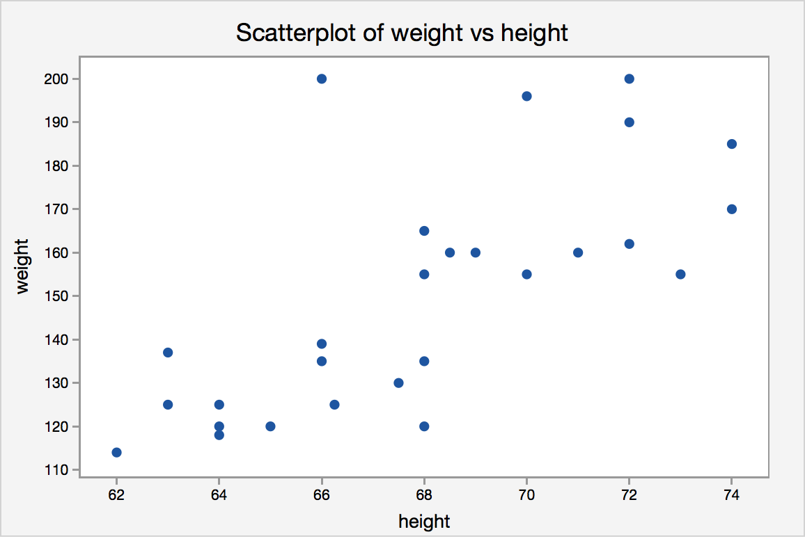
Model specification
Bias-variance tradeoff
- Adding predictors always increases model fit - Yet parsimony often improves predictionsMany criteria drive model selection
- Modeling objectives - Theoretical properties - Model flexibility - Precedents & prior beliefs - In-sample fit - Prediction quality - Computational properties
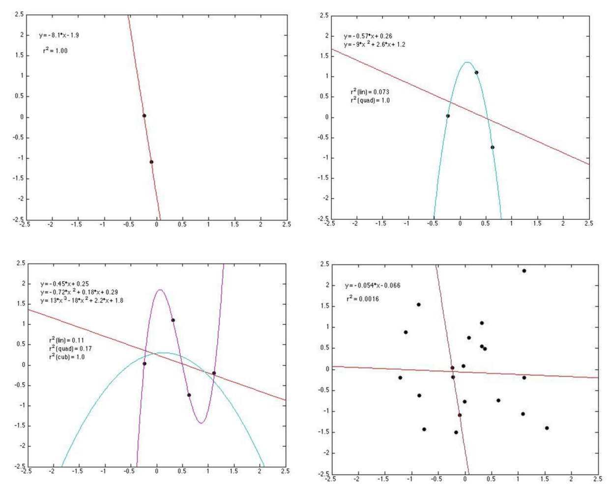
How to evaluate overfitting?
Retrodiction = “RETROspective preDICTION”
- Knowing what happened enables you to evaluate prediction quality - We can compare different models and different specifications on retrodictive accuracyWe can even train a model to maximize retrodiction quality (“Cross-validation”)
- Most helpful when the model's purpose is prediction - More approaches: Choose intentionally simple models - Penalize the model for uninformative parameters: Lasso, Ridge, Elastic Net, etc.
Cross-validation
- General approach to evaluate retrodiction performance and overfitting risk among a set of competing models \(m=1,...,M\). Algorithm:
- Randomly divide the data into \(K\) distinct folds
- Hold out fold \(k\), use remaining \(K-1\) folds to estimate model \(m\), then predict outcomes in fold \(k\); store prediction errors
- Repeat 2 for each \(k\)
- Repeat 2&3 for every model \(m\)
- Retain model \(m\) with minimal prediction errors, usually MAPE or MSPE
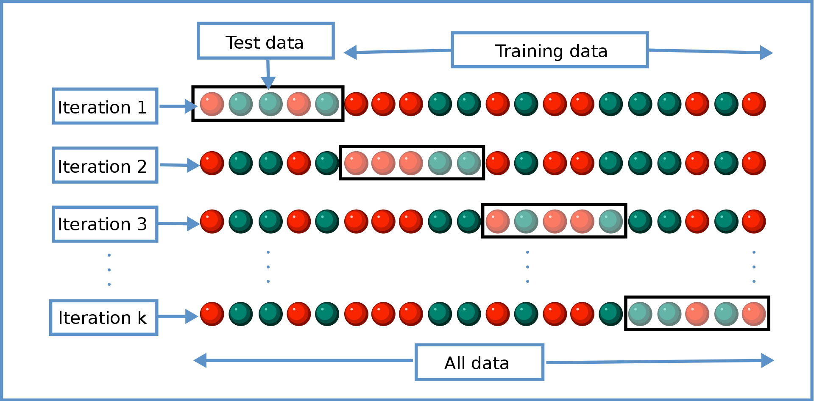
- You estimate every model K times (K=4 in the graphic)
- Each estimation uses a different (K-1)/K proportion of the data
- We evaluate each model's retrodiction quality K times, then average them
- When K=N, we call that "leave-one-out" cross-validation
- Important: cross-validation is just one tool in the box. Not the only
- Final model selection also depends on theory, objectives, other criteriaEx-post evaluations
- Can a model be robust to major changes in the data-generating process?
- Non-random holdouts are strong tests, but can only be retrospective
Het demand: Misuse Risks
Customer attributes should reflect differences in customer needs
Customer data should be high quality (GIGO, Errors-in-variables biases)
Use needs to consider qualitative factors {effectiveness, legality, morality, privacy, conspicuousness, equity, reactance}
- Guiding principle (not a rule):
Using data to legally, genuinely serve customers’ interests is usually OK - Using private data against customer interest can harm some consumers, break laws, incur liability. One lawsuit can kill a start-up
- Major US laws: COPPA, GLBA, HIPAA, patchwork of state laws
- Guiding principle (not a rule):
Adding heterogeneity to a demand model does not resolve price endogeneity. Still need exogenous price variation
Some evidence
- How does demand model performance depend on specification and training data?
Research question
Suppose we
Train demand model \(M\) to predict mayonnaise sales …
… using information set \(X\) …
… & choose targeted discounts for each consumer to maximize firm profits
- Essentially 3rd-degree price discrimination
Separately, using different data, we nonparametrically estimate how each individual responds to price discounts
- This gives us ground-truth to assess each household's response to price discount - But, the nonparametric estimate can't give counterfactual predictions; we need M for thatHow do targeted coupon profits depend on \(M\) and \(X\)?
- We use model M and data X to predict profits of offering targeted price discounts to particular households - We use ground-truth to calculate household response, then calculate profits across all households - We'll also compare to no-discount and always-discount strategies
Lil bit of theory
For any price discount < contribution margin, giving a targeted discount to…
… our own brand-loyal customer directly reduces profit
… a marginal customer may increase profit
… another brand’s loyal customer does not change profit
So the demand model’s challenge is to distinguish marginal customers from loyal customers
- This research disregards the `post-promotion dip' for simplicity
Information sets \(X\)
Base Demographics:
Income, HHsize, Retired, Unemployed, SingleMomExtra Demographics: Age, HighSchool, College, WhiteCollar, #Kids, Married, #Dogs, #Cats, Renter, #TVs
Purchase History: BrandPurchaseShares, BrandPurchaseCounts, DiscountShare, FeatureShare, DisplayShare, #BrandsPurchased, TotalSpending
Demand Models \(M\)
Bayesian Logit models (3)
- Based on utility maximization in which consumers compare utility and price of each available product - Includes Hierarchical and Pooled versionsMultinomial Logit Regressions (2)
- Estimated via Lasso and Elastic Net to reduce overfittingNeural Network (2)
- Including single-layer and deep NNKNN: Nearest-Neighbor Algorithm (1)
Random Forests (2)
- Including standard RF for bagging and XGBoost for boosting
How do we answer the question?
Economic criteria:
What profit does each \(M\)-\(X\) combination imply?- Depends on counterfactual predictions: What if we had selected different customers to receive coupons? - Quantifies prediction quality in profit termsStatistical criteria:
How well does each \(M\)-\(X\) fit its training data?- Generally, what the models are generally trained to maximize
Economic and statistical criteria can be very different
- Doing well on one does not imply doing well on the other
- Which one do we care more about in customer analytics?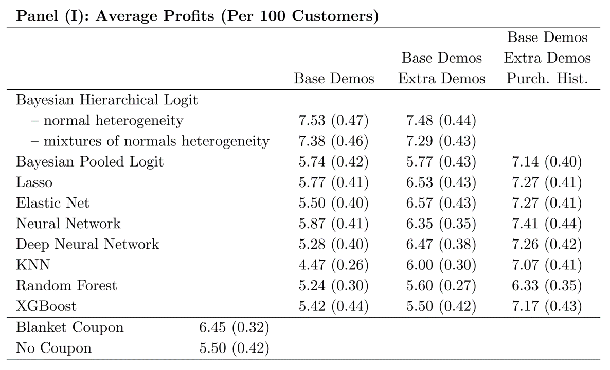
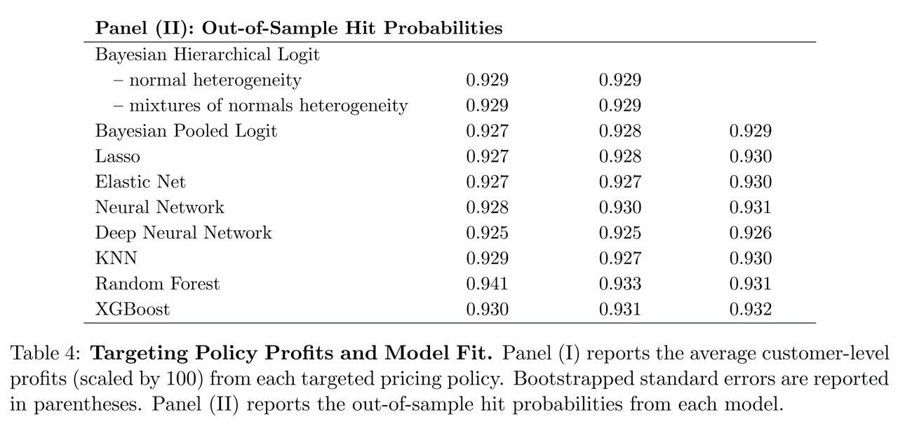
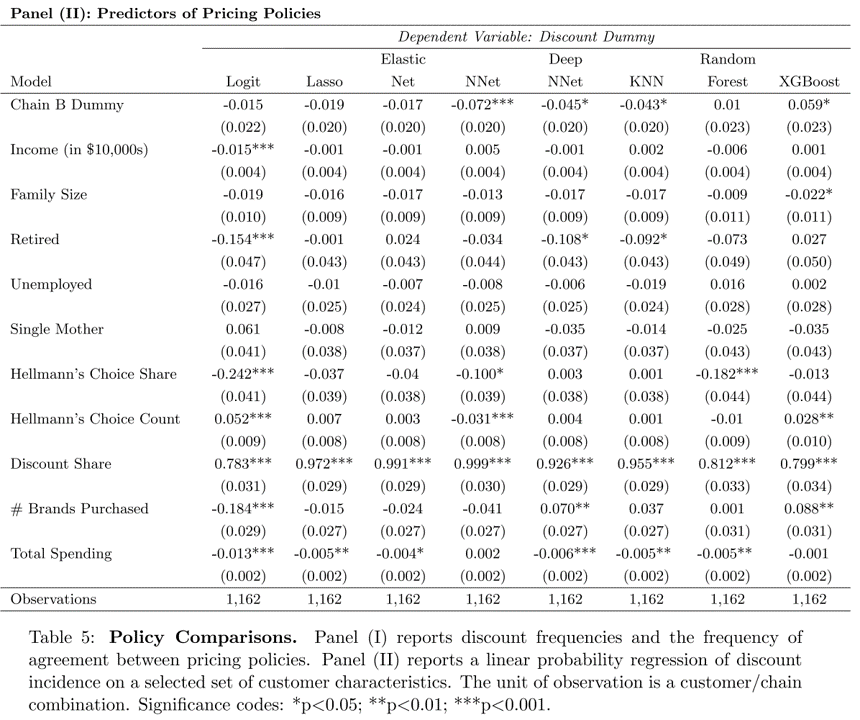
Takeaways
To predict behavior, use past behavior
Economic theory can help demand models to perform well with limited behavioral data
ML model performance depends critically on data quality & abundance. Counterfactual predictions do not always outperform economic models
Statistical performance \(\ne\) economic performance
Conjoint Analysis
- Generates stated-preference data to estimate heterogeneous demand model, to enable counterfactual predictions and optimal product designs
- Probably the most popular quant marketing framework: >10k studies/year (Sawtooth 2008)
Choosing Product Attributes
Until now, we studied existing product attributes
- What about choosing new product attribute levels?
- Or what about introducing new products?
Enter conjoint analysis: Attributes are Considered jointly
Survey and model to estimate attribute utilities- Autos, phones, hardware, durables - Travel, hospitality, entertainment - Professional services, transportation - Consumer package goodsCombines well with cost data to select optimal attributes
Conjoint analysis implementation
Identify \(K\) product attributes and levels/values \(x_k\) : These constitute points in your attribute space
- Screen size: 5.5", 6", 6.5", 7" - Memory: 8 GB, 16 GB, 32 GB, 64 GB, 128 GB - Price: $199, $399, $599, $799, $999Recruit consumer participants to make choices
- Choose a representative sample of your target market - Offer 8-15 choices among 3-5 hypothetical attribute bundlesSample from product space, record consumer choices
Specify model, i.e. \(U_j=\sum_{k}x_{jk}\beta_k-\alpha_k p_j+\epsilon_j\)
and \(P_j=\frac{\sum_{k}x_{jk}\beta_k-\alpha_k p_j}{\sum_l\sum_{k}x_{lk}\beta_k-\alpha_k p_l}\)- Beware: p is price , P is choice probability or market shareCalibrate choice model to estimate attribute utilities
Combine estimated model with cost data to choose product locations and predict outcomes
Sample choice task
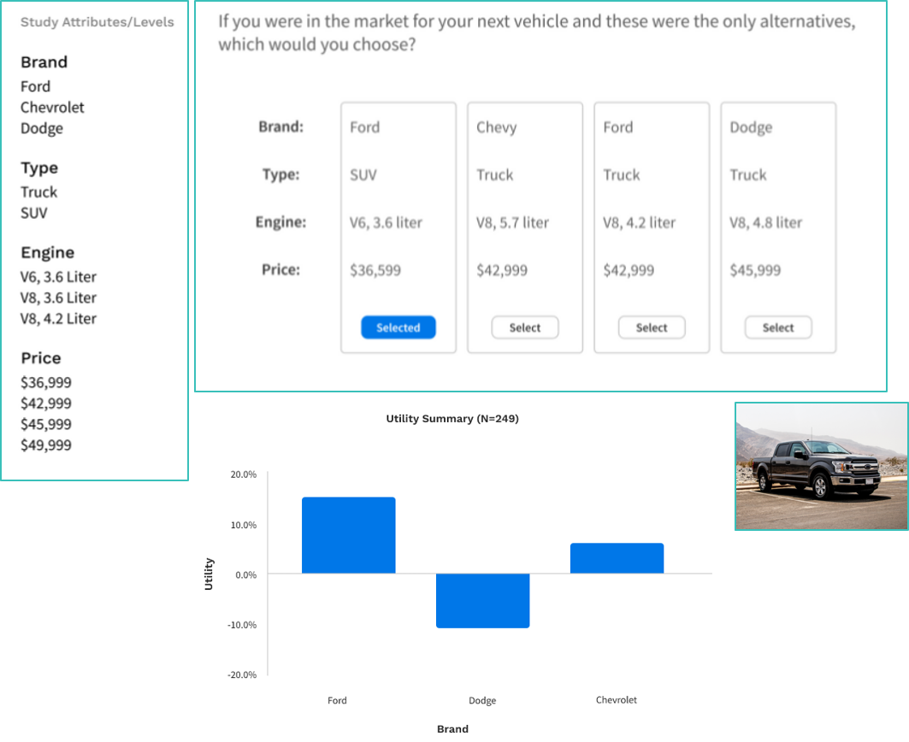
Case study: UberPOOL
In 2013, Uber hypothesized
- some riders would wait and walk for lower price - some riders would trade pre-trip predictability for lower price - shared ridership could ↓ average price and ↑ quantity - more efficient use of drivers, cars, roads, fuel
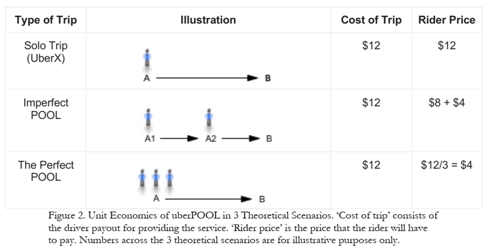
Business case was clear! But …
Shared rides were new for Uber
- Rider/driver matching algo could reflect various tradeoffs - POOL reduces routing and timing predictabilityUber had little experience with price-sensitive segments
- What price tradeoffs would incentivize new behaviors? - How much would POOL expand Uber usage vs cannibalize other services?Coordination costs were unknown
- "I will never take POOL when I need to be somewhere at a specific time" - Would riders wait at designated pickup points? - How would comunicating costs upfront affect rider behavior?Uber used market research to design UberPOOL
Approach
23 in-home diverse interviews in Chicago and DC
- Interviewed {prospective, new, exp.} riders to (1) map rider's regular travel, (2) explore decision factors and criteria, (3) a ride-along for context - Findings identified 6 attributes for testingOnline Maximum Differentiation Survey
- Selected participants based on city, Uber experience & product; N=3k, 22min
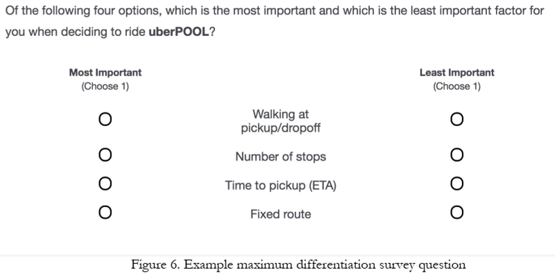
Maxdiff results
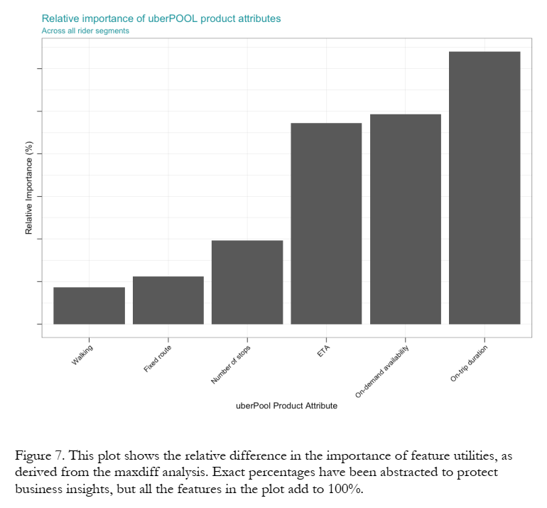
Conjoint Attribute Space
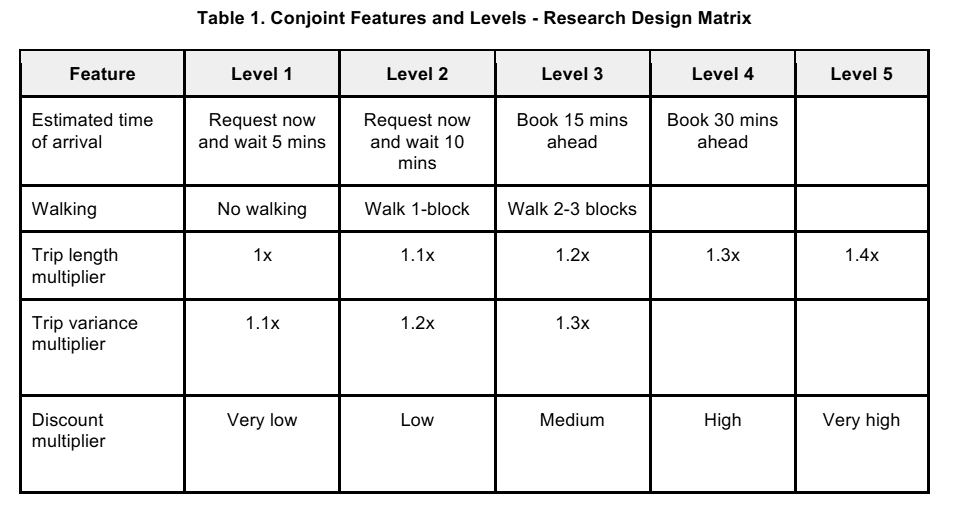
Conjoint Sample Question
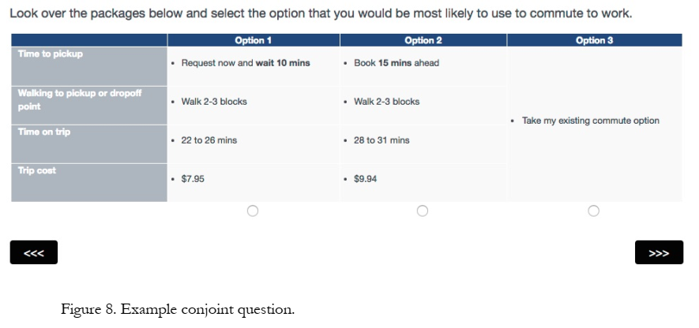
Conjoint Model
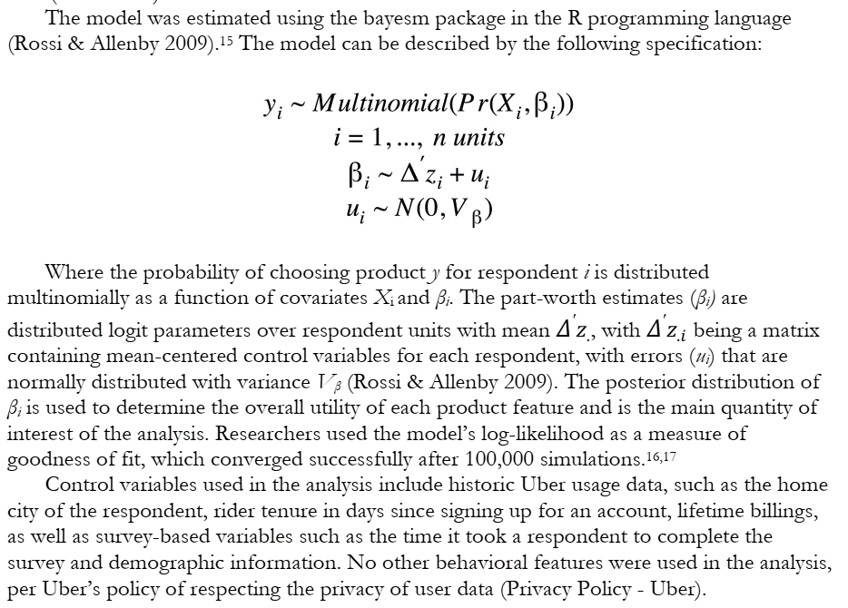
Conjoint Findings
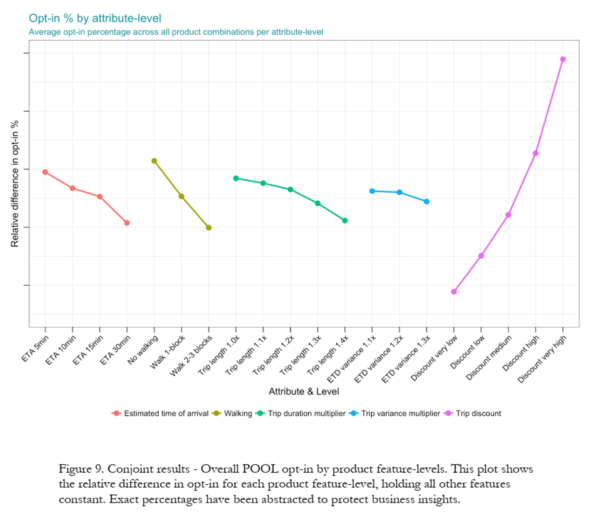
Product Redesign
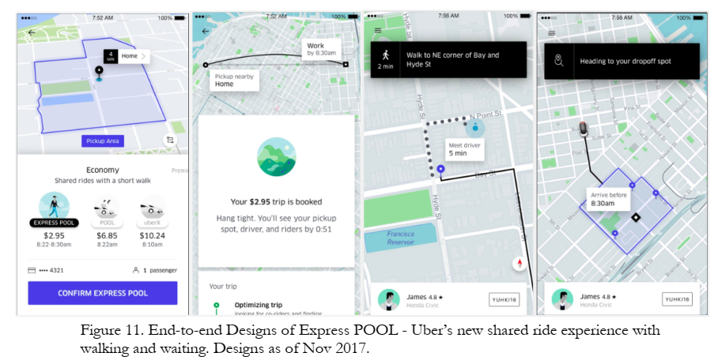
Business Results
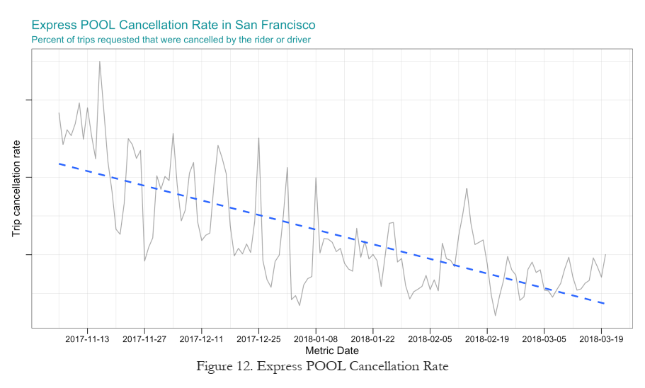
More Products
Conjoint: Limitations, Workarounds
We may fail to consider most important attributes or levels
- But we can consult with experts beforehand and ask participants duringAdditive utility model may miss interactions or other nonlinearities
- But this is testable & can be specified in the utility modelExploring a large attribute space gets expensive
- But we can prioritize attributes and use efficient, adaptive sampling algorithmsAssumes accurate hypothetical choices based on attributes
- But we can train consumers how to mimic more organic choicesParticipants may not represent the market
- But we can measure & debias some dimensions of selectionChoice setting may not represent typical purchase contexts
- I.e., stated preferences may not equal revealed preferences - But we can model the retail channel and vary # of competing products - We can perform conjoint regularly to evaluate predictive accuracyParticipant fatigue or inattention
- But we can incentivize, limit choices, check for preference reversalsConsumer preferences evolve
- But we can repeat our conjoints regularly to gauge durability, predict trends
Wrapping up
Class script
- Add heterogeneity to MNL model
- Individual-level heterogeneity via price-minutes interaction
- Segment-level heterogeneity via segment-attribute interactions
- Both

Recap
Heterogeneous demand models enable personalized and segment-specific policy experiments
Demand models can incorporate discrete, continuous and/or individual-level heterogeneity structures
Heterogeneous demand models fit better, but beware overfitting and misuse
Conjoint analysis uses stated-preference data to map markets and predict profits of product locations in attribute space

Going further
Reconciling modern machine learning practice and the bias-variance trade-off
MGT 108R to design & run conjoint analyses
Conjoint literature is huge. Good entry points: Chapman 2015, Ben-Akiva et al 2019, Green 2022, Allenby et al. 2019